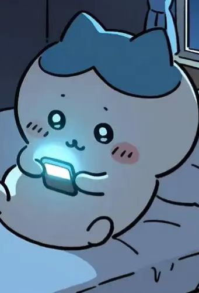
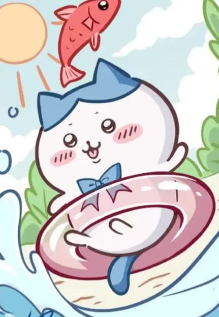
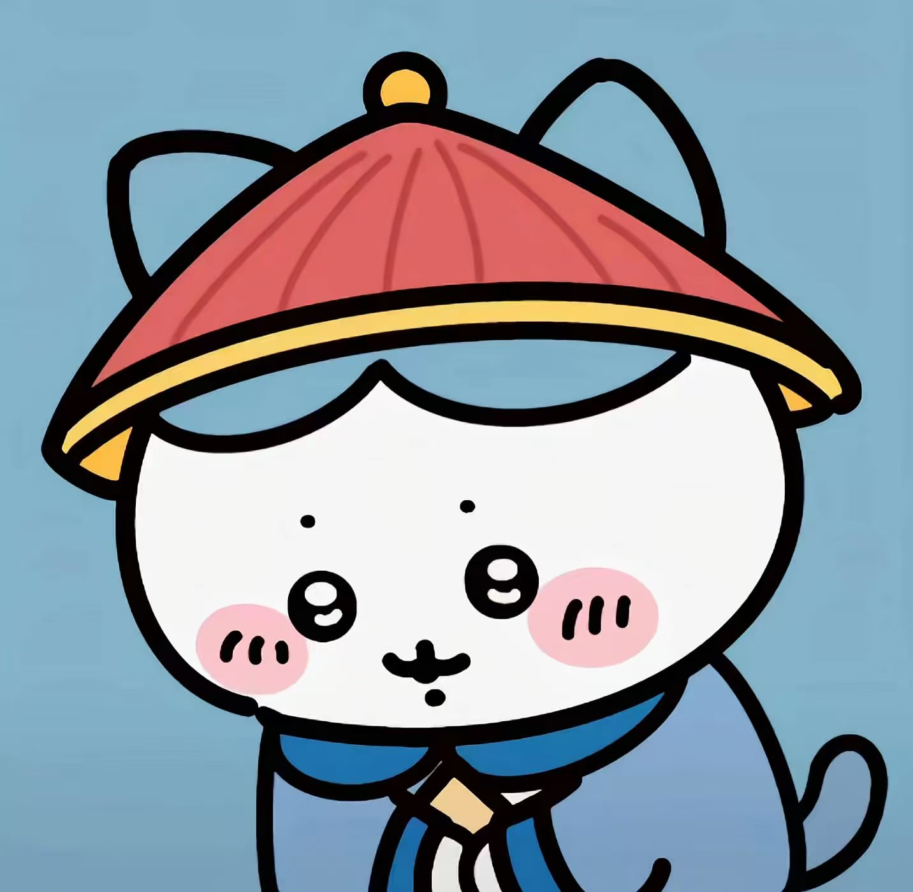
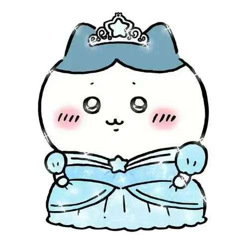
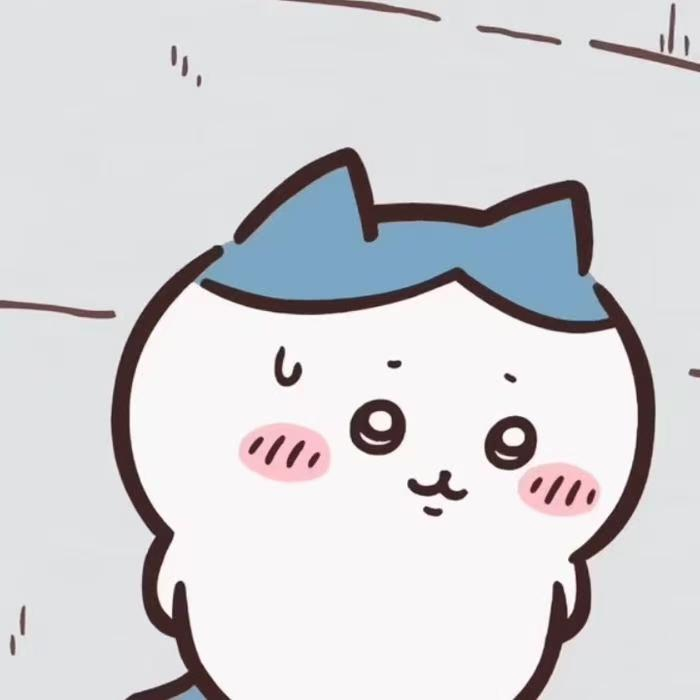
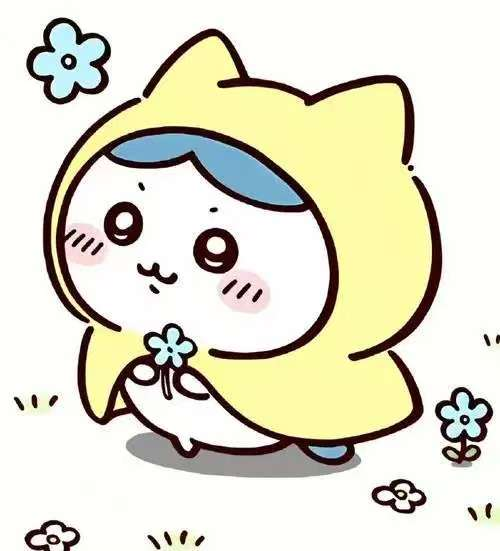
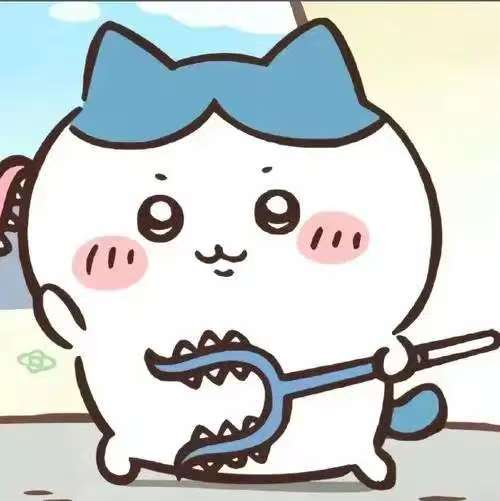
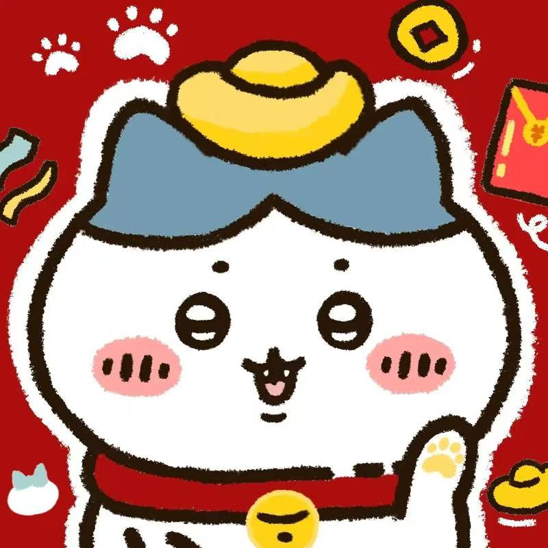

小八
- 外貌特征
身体小小的，头顶有蓝色八字花纹，尾巴的毛发也是蓝色，其余地方为白色，
尾巴长长的可以在地上拍打，天气变冷时毛发会变长。
- 性格特点
性格外向，乐观开朗，是个乐天派，也是典型的“e人”。为人亲切，擅长社交，
慷慨乐观，细心体贴，总是为他人着想，能敏锐地感知他人的需求并做出适当反应，
是个温暖的存在。其MBTI类型是ESFJ「执政官」。
- 语言能力：
是主角团中唯一能够完整使用人类语言说话的角色，扮演着重要的“翻译”角色，
帮助观众理解吉伊、兔兔等只会发出声音的角色的意思。
- 才艺技能：
歌声好听，会弹吉他，动画片尾曲《自言自语》就是他演唱的，还喜欢摄影，
经常给朋友们拍照，也擅长烹饪，会做各种平民料理，常与朋友们分享。
- 生活与工作
靠除草、采集和讨伐为生，已考取五级除草证，武器是一把蓝色的讨伐棍。
会为了想要的东西，如相机、讨伐棍等努力存钱，生活节俭，对物品爱护有加。





